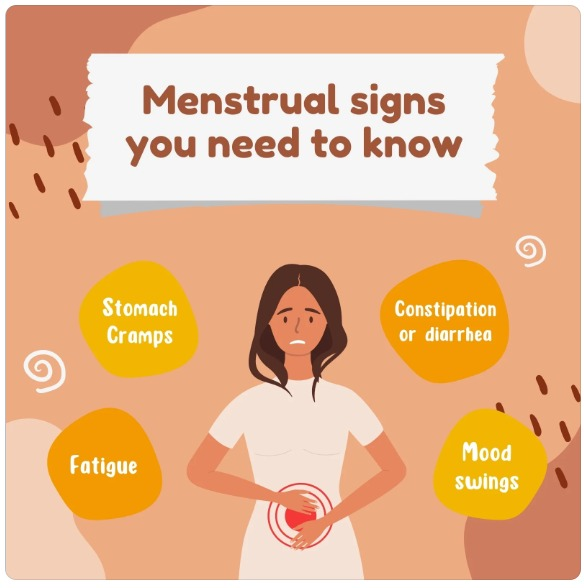

Sanitary Napkins
Sanitary Napkins  Menstrual Cups
Menstrual Cups Tampons
Tampons Panty Liner
Panty LinerCHAPTER 3 ~ THINGS TO BE AWARE OFF & THINGS TO LEARN:
1] For Girls (Beginning)
→Before Menstruation
→During Menstruation
→After Menstruation
2] For women (During Menopause)
&
(After Menopause)
 For Girls (Beginning)
Starting menstruation is a significant milestone in a girl's life, and it's important for her to be informed and prepared. Here are some things to be aware of and learn about:
In Beginning
- 1. Menstrual Hygiene:
- Sanitary Products: Learn about different menstrual hygiene products such as pads, tampons, and menstrual cups.
Understand how to use them correctly.
Directions to use pad-
Directions to use tampons-
Directions to use menstrual cups- - Change Regularly: Stress the importance of changing sanitary products regularly to avoid discomfort and reduce the risk of infection.
- 2. Understanding the Menstrual Cycle:
- Cycle Length: The average menstrual cycle is around 28 days, but it can vary. Track your cycle to understand its length and patterns.
- Ovulation: Understand the concept of ovulation and fertility, especially if there's an interest in family planning in the future.
- 3. Managing Discomfort:
- Cramps: Learn about ways to manage menstrual cramps, such as heat therapy, over-the-counter pain relievers, and maintaining a healthy lifestyle.
- Emotional Changes: Recognize that hormonal changes during menstruation can affect mood. Encourage healthy coping mechanisms.
- 4. Communication:
- Open Discussions: Create an environment where she feels comfortable discussing menstruation openly. Encourage questions and provide accurate information.
- Communicate with Peers: Assure her that many of her peers are going through the same experience, fostering a sense of normalcy.
- 5. General Well-being:
- Nutrition: Emphasize the importance of a balanced diet for overall health, including during menstruation.
- Exercise: Regular physical activity can help alleviate menstrual symptoms and improve mood.
- 6. PMS (Premenstrual Syndrome):
- Symptoms: Be aware of common premenstrual symptoms such as mood swings, bloating, and irritability. Learn strategies to cope with these symptoms.
- 7. Emergency Preparedness:
- Carry Supplies: Encourage keeping spare sanitary products in a purse or backpack for emergencies.
- Know Resources: Understand where to find resources and support, such as a school nurse or counselor.
- 8. Body Positivity:
- Body Changes: Understand that menstruation is a natural part of growing up and that bodies go through various changes during puberty.
- Positive Body Image: Encourage a positive body image, emphasizing that menstruation is a normal and healthy process.
- 9. Healthcare:
- Regular Check-ups: Encourage regular health check-ups and discussions about menstrual health with a healthcare provider.
- Seeking Help: Teach her when and how to seek medical help if there are unusual or concerning symptoms.
- 10. Environmental Impact:
- Sustainable Options: Consider environmentally friendly menstrual products like reusable pads or menstrual cups.
- 11. Cultural and Social Perspectives:
- Cultural Variations: Understand that cultural beliefs and practices regarding menstruation may vary. Encourage respect for diverse perspectives.
- 12. Self-Care Practices:
- Rest: Emphasize the importance of adequate rest during menstruation.
- Self-Compassion: Teach the importance of self-compassion and self-care during this time.
Remember that every girl's experience is unique, so it's crucial to adapt this guidance to her individual needs and circumstances. Open communication, support, and education are key elements in navigating this important stage of life.
Starting menstruation is a significant milestone for girls, and it's essential to provide them with information and support during this time. Here are some things to be aware of and things for girls to learn when they begin menstruating:
Things to Be Aware Of:
- 1. Emotional Changes:
- Hormonal fluctuations during menstruation can lead to mood swings and emotional changes. It's important to acknowledge and manage these feelings.
- 2. Physical Changes:
- Understand that the menstrual cycle involves physical changes such as breast tenderness, bloating, and cramps. Proper hygiene and self-care can help alleviate discomfort.
- 3. Menstrual Products:
- Familiarize yourself with different menstrual products, including pads, tampons, menstrual cups, and period panties. Girls should choose the product that suits them best.
- 4. Menstrual Hygiene:
- Emphasize the importance of good menstrual hygiene practices, such as changing pads or tampons regularly, washing hands before and after handling menstrual products, and maintaining cleanliness.
- 5. Tracking Menstrual Cycle:
- Encourage girls to track their menstrual cycles. This can help predict when their period will come and understand their body's natural rhythms.
- 6. Nutrition and Hydration:
- Adequate nutrition and hydration are essential during menstruation to support the body. Encourage a balanced diet and staying hydrated.
- 7. Open Communication:
- Create an open and supportive environment for girls to discuss their experiences, concerns, and questions about menstruation.
- 8. Educational Resources:
- Provide reliable sources of information, whether it's books, websites, or educational materials, to help girls understand the menstrual cycle and changes in their bodies.
Things to learn:
- 1. Understanding the Menstrual Cycle:
- Learn about the different phases of the menstrual cycle, including menstruation, the follicular phase, ovulation, and the luteal phase.
- 2. Menstrual Product Usage:
- Understand how to use various menstrual products correctly, including inserting tampons or menstrual cups and choosing the right absorbency for pads.
- 3. Pain Management:
- Learn about methods to manage menstrual cramps, such as heat therapy, over-the-counter pain relievers, and relaxation techniques.
- 4. Self-Care Practices:
- Explore self-care practices that can help alleviate discomfort during menstruation, such as warm baths, relaxation exercises, and getting adequate rest.
- 5. Confidence and Body Image:
- Foster a positive body image and self-confidence, emphasizing that menstruation is a natural and healthy part of life.
- 6. Setting Boundaries:
- Learn to communicate personal boundaries and needs during menstruation. It's okay to ask for support or privacy when needed.
- 7. Seeking Help:
- Understand when to seek help from a healthcare professional, especially if there are irregularities in the menstrual cycle or severe discomfort.
Remember that each person's experience with menstruation is unique, so it's important to approach this topic with sensitivity and respect individual needs and preferences. Providing accurate information and fostering open communication can contribute to a positive and healthy attitude toward menstruation.
Before Menstruation
- 1. PMS Awareness:
- Learn about premenstrual syndrome (PMS) symptoms and how to manage them. This knowledge can help you prepare for potential mood swings or physical discomfort.
- 2. Healthy Habits:
- Maintain a healthy lifestyle with regular exercise, a balanced diet, and adequate sleep. These factors can positively influence your menstrual health.
- 3. Supplies:
- Ensure you have an adequate supply of sanitary products before your period begins.
- 4. Emotional Well-being:
- Be aware of potential emotional changes and practice stress-management techniques.
During Menstruation
- 1. Hygiene:
- Change sanitary products regularly to avoid bacterial growth.
- Maintain good genital hygiene to prevent infections.
- 2. Pain Management:
- Learn about different methods to manage menstrual cramps, such as hot packs, over-the-counter pain relievers, or natural remedies like herbal teas.
- 3. Nutrition:
- Maintain a balanced diet rich in iron to replenish the blood lost during menstruation.
- Stay hydrated to help alleviate bloating.
- 4. Physical Activity:
- Engage in light exercises to help alleviate menstrual symptoms.
- Listen to your body and adjust the intensity of your workouts as needed.
- 5. Tracking:
- Use apps or a menstrual calendar to track your menstrual cycle. This can help you anticipate when your period will start and monitor any irregularities.
After Menstruation:
- 1. Recovery:
- Take it easy if you experienced discomfort during your period. Allow your body to recover.
- 2. Self-Care:
- Practice self-care to boost your mood and energy levels. This can include activities you enjoy, such as reading, taking a bath, or spending time with loved ones.
- 3. Reflect:
- Reflect on your menstrual cycle. Note any changes in symptoms or emotions. This can help you understand your body better.
General Tips:
- 1. Education:
- Stay informed about reproductive health. Understanding the menstrual cycle can empower you to make informed decisions about your well-being.
- 2. Communication:
- Communicate with healthcare professionals if you have concerns or irregularities in your menstrual cycle.
- 3. Community Support:
- Join supportive communities or talk to friends and family about your experiences. This can provide emotional support and helpful tips.
- 4. Medical Attention:
- If you experience severe pain, heavy bleeding, or other unusual symptoms, consult a healthcare professional.
Remember that each person's experience with menstruation is unique, and what works for one may not work for another. Pay attention to your body's signals, and don't hesitate to seek professional advice if needed.
For women (menopause)
Menopause is a natural and normal part of a woman's aging process, typically occurring in her late 40s or early 50s. It marks the end of menstruation and fertility. During this transitional phase, women may experience various physical and emotional changes. Here are some things to be aware of and things to learn for women going through menopause:
Things to Be Aware Of:
- 1. Physical Changes:
- Hot flashes and night sweats
- Changes in sleep patterns
- Vaginal dryness and discomfort
- Changes in skin, hair, and nails
- 2. Emotional Changes:
- Mood swings and irritability
- Anxiety and depression
- Changes in libido
- Memory and concentration issues
- 3. Bone Health:
- Decreased estrogen levels can lead to bone density loss, increasing the risk of osteoporosis.
- 4. Heart Health:
- Estrogen decline can affect cardiovascular health, so it's essential to monitor heart health during menopause.
- 5. Weight Management:
- Hormonal changes can impact metabolism and body composition.
- 6. Routine Health Screenings:
- Regular check-ups and screenings for conditions such as breast cancer, osteoporosis, and cardiovascular disease become crucial.
- 7. Healthy Lifestyle:
- Maintaining a balanced diet and regular exercise can help manage weight and improve overall well-being.
- 8. Hormone Replacement Therapy (HRT):
- Understanding the potential benefits and risks of HRT, which is a medical option to manage menopausal symptoms.
- 9. Communication:
- Openly communicating with healthcare providers, partners, and friends about the physical and emotional changes experienced.
- 10. Self-Care:
- Prioritizing self-care activities to reduce stress, including relaxation techniques like meditation or yoga.
Things to Learn:
- 1. Menopause and Hormones:
- Understand the role of hormones, especially estrogen, in the body and how their decline during menopause affects various systems.
- 2. Nutrition:
- Learn about a balanced diet that supports overall health, bone density, and heart health during and after menopause.
- 3. Exercise for Menopause:
- Discover suitable exercises that promote bone health, cardiovascular fitness, and overall well-being during this life stage.
- 4. Stress Management:
- Explore stress reduction techniques such as mindfulness, deep breathing, or progressive muscle relaxation.
- 5. Sleep Hygiene:
- Implement good sleep habits to manage changes in sleep patterns during menopause.
- 6. Sexual Health:
- Understand how menopause can affect sexual health and explore ways to maintain intimacy and comfort.
- 7. Support Networks:
- Build a support network with friends, family, or support groups to share experiences and advice.
- 8. Medical Options:
- Be informed about medical interventions like hormone therapy and other medications available to manage specific symptoms.
- 9. Regular Health Check-ups:
- Understand the importance of regular health check-ups and screenings to detect and address potential health issues early.
- 10. Emotional Well-being:
- Learn coping mechanisms and strategies for maintaining emotional well-being during this transitional phase.
It's crucial for women to approach menopause with a proactive and informed mindset, seeking support from healthcare professionals and building a holistic approach to well-being. Each woman's experience is unique, so personalized care and understanding are key.
(After Menopause)
After menopause, women may experience various changes in their bodies due to hormonal shifts. It's essential to be aware of these changes and take steps to maintain good health and well-being. Here are some things to be aware of and learn about after menopause:
Health and Wellness:
- 1. Bone Health:
- Learn about the importance of calcium and vitamin D for maintaining bone health.
- Understand the risks of osteoporosis and ways to prevent it, such as weight-bearing exercises and bone density screenings.
- 2. Heart Health:
- Be aware of the increased risk of heart disease after menopause.
- Understand the importance of a heart-healthy diet, regular exercise, and maintaining a healthy weight.
- 3. Hormone Replacement Therapy (HRT):
- Stay informed about the benefits and risks of hormone replacement therapy.
- Discuss with healthcare professionals if HRT is a suitable option based on individual health and preferences.
- 4. Pelvic Health:
- Learn about pelvic floor exercises to maintain bladder and bowel health.
- Be aware of the potential changes in vaginal health and discuss any concerns with a healthcare provider.
Mental and Emotional Health:
- 1. Mood Changes:
- Understand that hormonal fluctuations can affect mood and emotional well-being.
- Explore strategies for managing stress and maintaining mental health.
- 2. Sexual Health:
- Be aware of changes in sexual function and libido.
- Open communication with a partner and healthcare provider is crucial for addressing any concerns.
- 3. Depression and Anxiety:
- Recognize the signs of depression and anxiety, which can be more prevalent during and after menopause.
- Seek professional help if needed and consider support groups.
Lifestyle:
- 1. Diet and Nutrition:
- Learn about nutritional needs post-menopause, including adequate intake of calcium, vitamin D, and other essential nutrients.
- Consider a well-balanced diet that supports overall health and helps manage weight.
- 2. Physical Activity:
- Engage in regular physical activity to maintain muscle strength, bone density, and cardiovascular health.
- Explore activities that are enjoyable and sustainable.
- 3. Regular Health Check-ups:
- Schedule regular check-ups with healthcare providers to monitor blood pressure, cholesterol levels, and overall health.
- Discuss and follow recommended screening guidelines for various health issues.
- 4. Stress Management:
- Learn and practice stress-reduction techniques such as meditation, yoga, or deep breathing exercises.
Regular Health Screenings:
- 1. Mammograms:
- Understand the importance of regular mammograms for breast health.
- 2. Colonoscopies:
- Discuss with healthcare providers the appropriate timing and frequency for colonoscopies.
- 3. Bone Density Tests:
- Follow recommendations for bone density testing to assess the risk of osteoporosis.
- 4. Cholesterol and Blood Pressure Checks:
- Monitor cholesterol levels and blood pressure regularly.
It's crucial to remember that every woman's experience with menopause is unique, and individual healthcare needs may vary. Consulting with healthcare professionals for personalized advice and guidance is always recommended.